Overview
Illini Electric Motorsports builds and races an electric Formula SAE car, and since 2023 I have led several of its most critical aerodynamics projects. The aero package is judged the same way every other subsystem is: by points, a full-vehicle simulation of the dynamic events at competition that converts a change in lift coefficient, drag coefficient, and mass into a single number. A part earns its place on the car only if it is points positive, so every study on this page ends in the same currency — not just “more downforce,” but whether the downforce is worth the drag and the weight it costs.
Across three seasons I have owned three major projects on that package: the airfoil inserts that carry every wing element’s load into the chassis (2023–25), the nosecone and front damper cover (2024–25), and the undertray — the single largest downforce producer on the car (2025–26). Each one ran the full cycle: market and rules research, a parameterized CAD model, CFD sweeps, structural sizing by hand calculation and FEA, a manufacturing plan, and then the layups themselves.
What I did
Undertray (2025–26). The previous season’s car ran a full-body undertray that outperformed everything before it but was, by the team’s own account, bulky, hard to work around, driven by strength rather than stiffness, and ultimately assembled as a hybrid floor after manufacturing problems. My brief was to match its downforce at equal or lower weight, package it so it could come on and off the car quickly, manufacture it accurately enough that real-world performance matched CFD, and keep the downforce build-up linear with speed so the static-margin migration stayed predictable for the driver.
I started with a weighted decision matrix across four concepts — a single full-body undertray, a full-body integrated undertray plus diffuser, and the same with venturis — scored on performance, mass, cost, design and analysis complexity, serviceability, integration, risk, and fixability. The integrated concept where the monocoque itself becomes the floor won (102 against 66 for the outgoing design), because it moves the floor into the monocoque layup, frees packaging space, lowers CG, and shrinks every mold enough to manufacture in house.
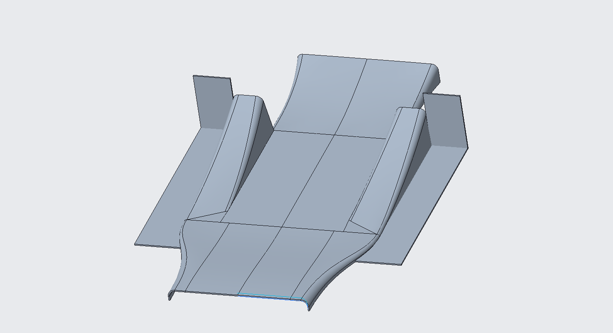
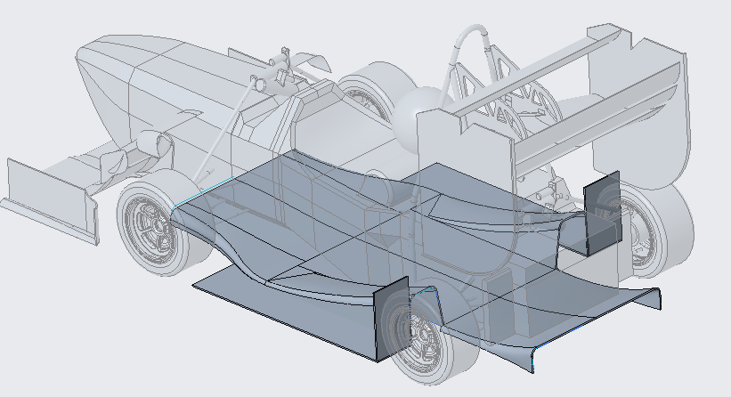
From there the season was a sequence of CFD sweeps. Venturi height swept from 8.5 in to 12.5 in, with a curve fit to the points data putting the optimum at 11.24 in. An inlet height study traded undertray sensitivity against monocoque height sensitivity and produced the season’s most useful insight: a tall inlet performed better, but only because it forced the inlet to narrow faster to clear the A-arms. Re-running a short inlet with that same aggressive narrowing recovered the gain, so the short inlet — far better for the monocoque — was chosen. I concluded the air entering the undertray is drawn in by the venturi and diffuser, not admitted by the size of the inlet.
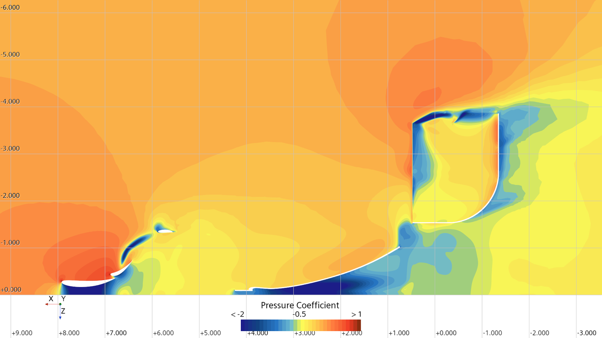
Diffuser height and length were swept next, constrained to a maximum 5° angle from the end of the venturi and traded against the CG gain from dropping the accumulator. The study ended with two designs within a point of each other — a long, tall diffuser and a short one — and the short one was chosen for jacking-bar packaging. That they were so close was itself the finding: with venturis that large there simply is not enough air left to feed a big diffuser, so the larger design mostly moved downforce rearward rather than creating any.
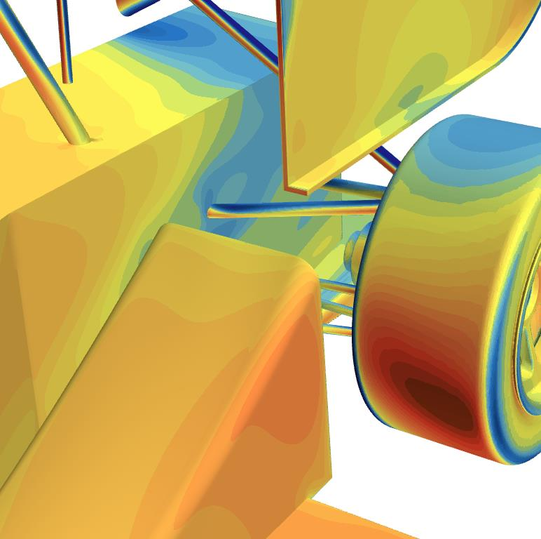
With the primary geometry frozen I moved to the tuning devices. Strakes turned out to be strongly points positive: full strakes spanning the diffuser block the tire wake, and partial strakes shed a vortex that helps the full ones without choking the intake. Vortex generators — a 1 in semicircle running the length of the skirt — were mildly positive, sealing the venturi tunnels by mixing high- and low-pressure air into a wall. Gurney flaps were barely positive and only survived on the diffuser. The tire plate was the season’s one real failure: it was points positive in isolation, but with the new rear wing it fed low-quality air straight into the wing and cost more than it gave. I tested several revised plates, none worked, and I killed it late in the process rather than carry the weight and complexity for a marginal part.
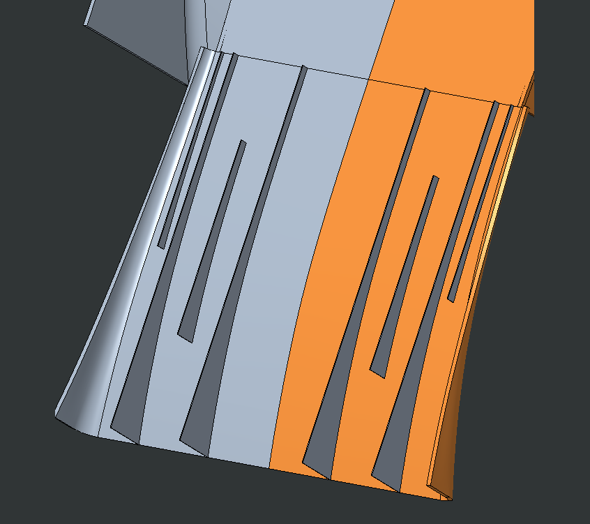
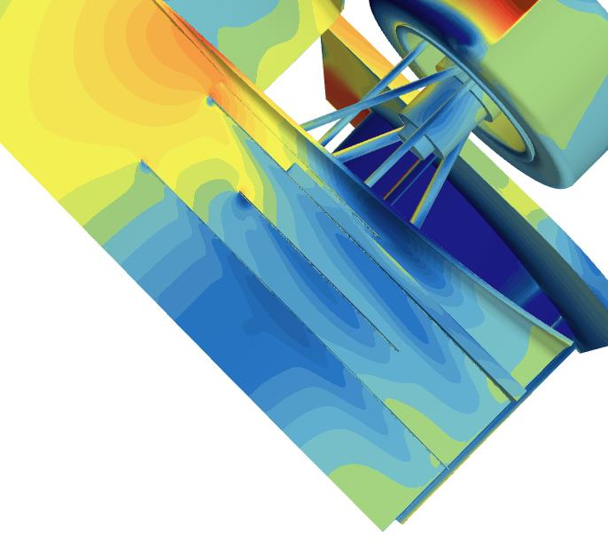
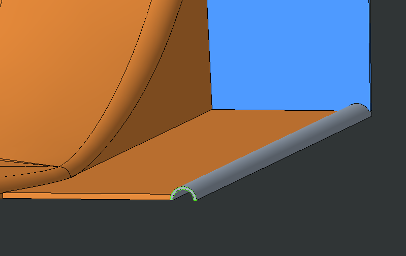
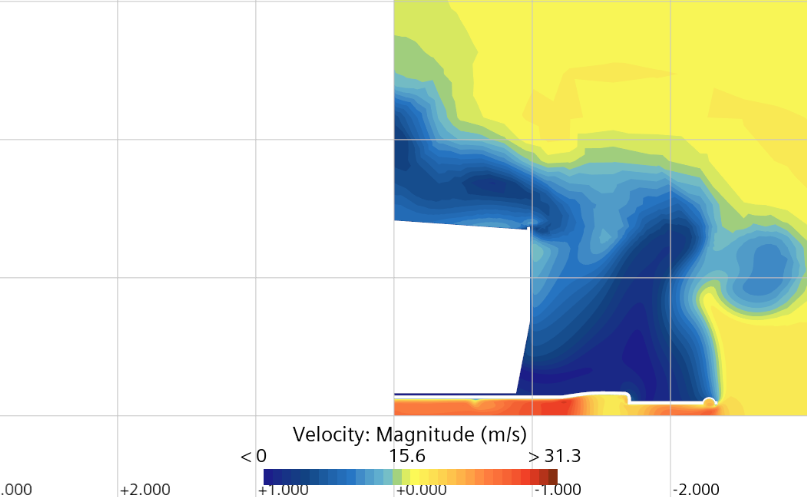
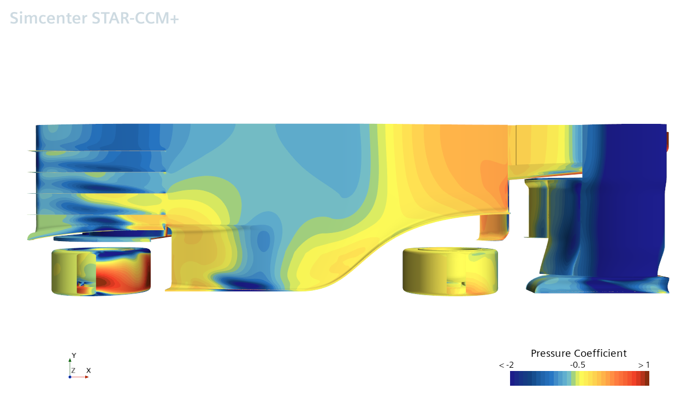
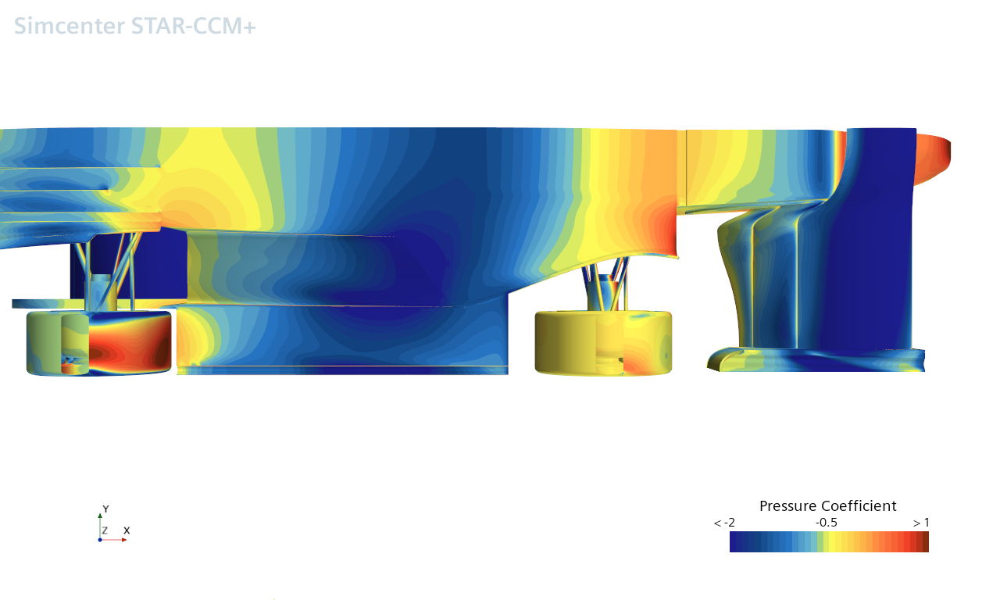
Structures, mounting and manufacturing. The undertray is not allowed to scrape, so deformation — not strength — drove the entire structural design. I set a 1/8 in deflection target at 95 mph aerodynamic loads so the scrape map would barely move, then sized the laminate and the mounting together in ANSYS. Loads came from the CFD: 443.6 lbs of downforce in z at 95 mph, of which about a third is carried by each cantilevered venturi section, modeled as 148 lbs acting 8 in outboard of the chassis, plus a 45 mph cone strike worst-cased as 869.9 lbs entirely in x on the front corner of the skirt.
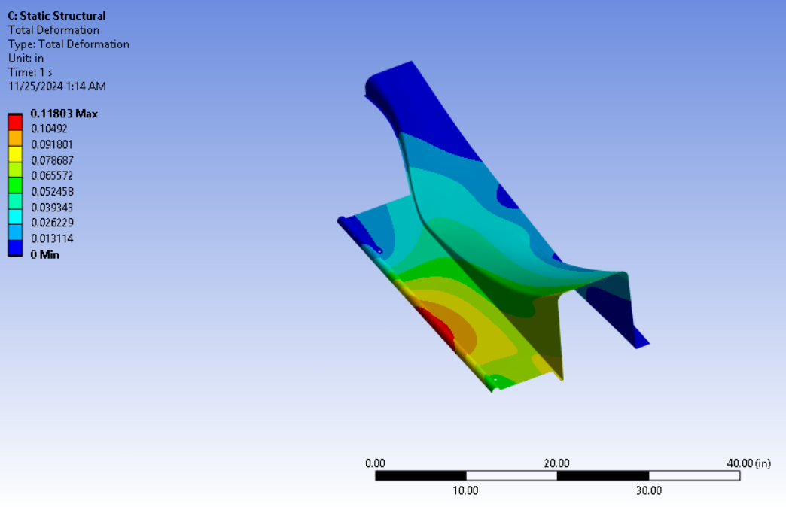
It became clear early that brackets alone could not hold the outboard section, so I added pre-loaded steel cables: lighter and smaller than tie rods, and capable of carrying vertical inertial loads in compression through pre-load. I placed brackets to put only one on each side in the regulated section of the monocoque where holes cannot be drilled, one at each end of the venturi, one ahead of the front hoop, all evenly spaced and reachable by hand. The 6061 aluminum brackets were sized against bending from pre-load, peeling, and shear; the aluminum potted inserts against shear and composite pull-through; and the 304 stainless cables against tensile failure and displacement — landing on a 1/16 in cable with a safety factor of 1.35 to displacement and 3.08 to yield, against a team target of 1.7 to yield on all loads. Cone-strike shear came out with a safety factor of 6.76.
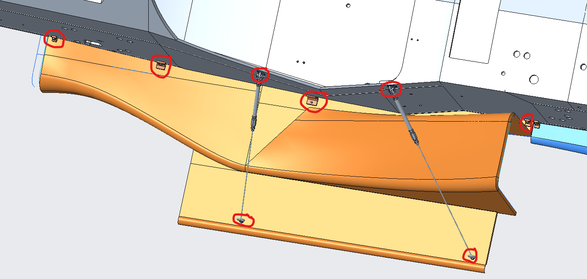
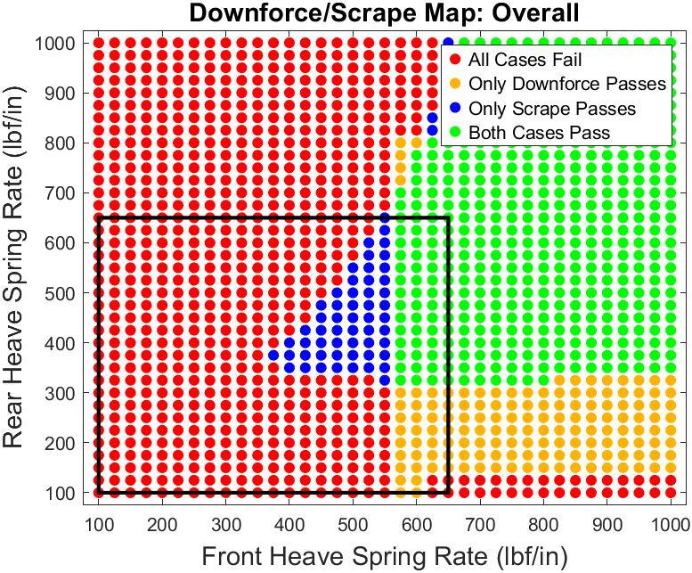
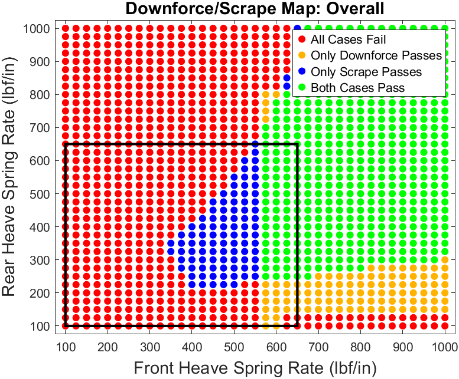
The last integration decision was how many pieces to build. Three was the plan — two venturis and a diffuser — but the rear bulkhead comes in and out of the car constantly and the diffuser has to come with it, so I moved to five pieces to shorten the length of undertray that has to be re-taped and re-sealed every time. The split line was chosen so the outermost strake on each side stays on a single piece, keeping the most important strake fully effective.
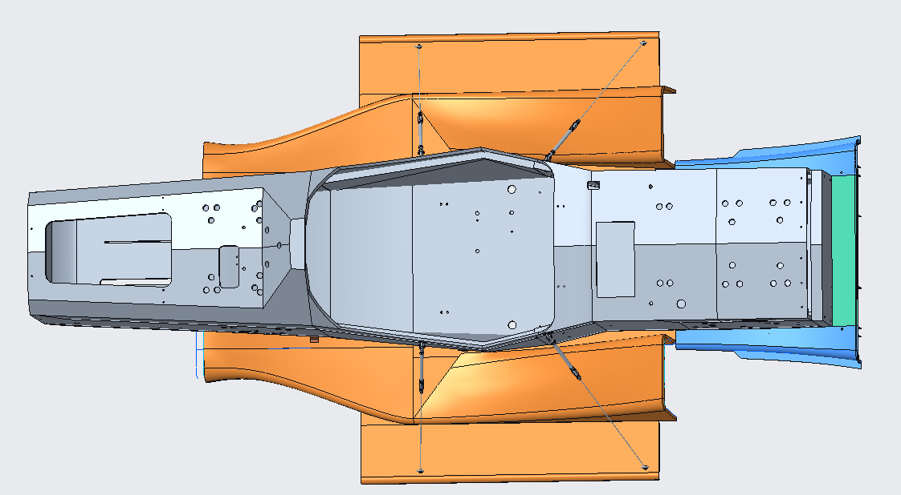
Nosecone and front damper cover (2024–25). I redesigned the nosecone and front damper system in Creo, building parameterized CAD models driven by dynamic bounding-box references and monocoque geometry constraints so the parts stayed rules-legal and correctly mated as the chassis around them changed. The nosecone had three constraints: every forward-facing edge needs a minimum 1.5 in radius extending 45° or more in every direction, it had to weigh no more than the previous 1 lb part, and it had to be points positive on lift, drag and weight together. I parameterized tip width, tip height and length from the front bulkhead, and swept them.
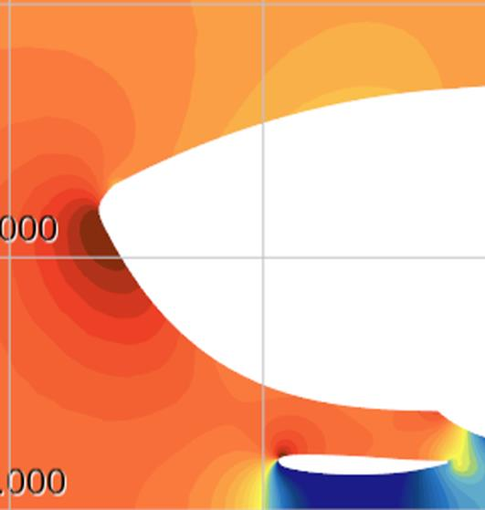
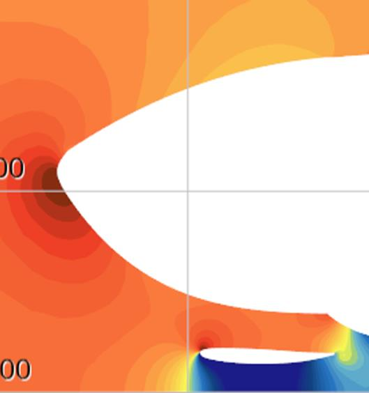
Tip width traded stagnation behavior against mass: the narrow 1.5 in tip keeps stagnation points closer to ambient air and diffuses high pressure to low pressure more effectively, but the 2 in wide tip weighs substantially less — 0.977 lbs against 1.358 lbs — and won on points. I also ran a three-way study on whether to cover the chamfered edge where the nosecone meets the front wing.
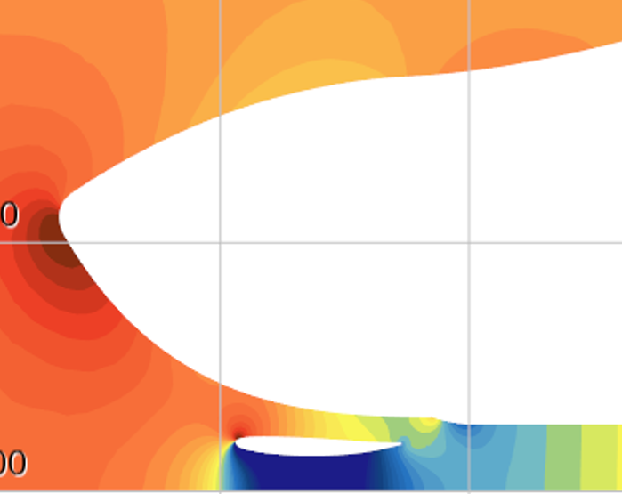
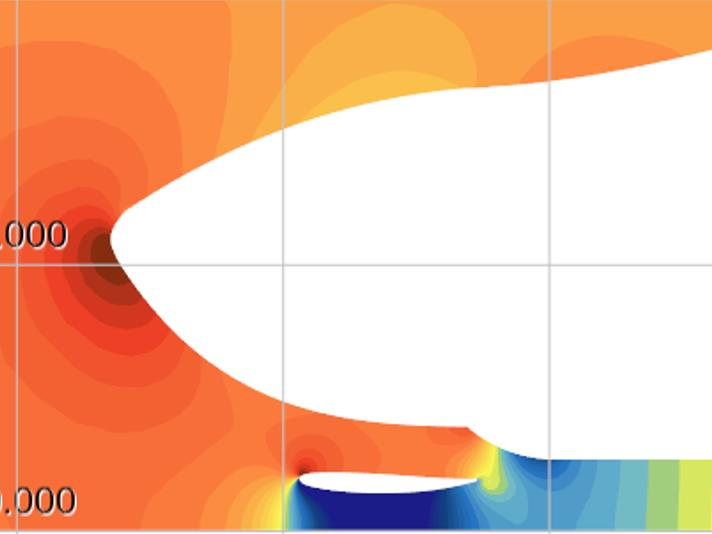
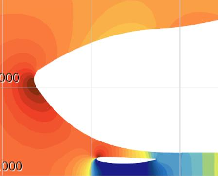
The final nosecone is 13 in high, 2 in at the tip and 16 in long, at 1.242 lbs, laid up in two plies over in-house female molds and bolted rather than bonded through six easily reached fasteners so it comes on and off quickly.
The front damper cover had a different set of constraints: sufficiently rigid in the static condition, able to take nominal aerodynamic loads, clearing the swept damper package through full travel, flush to the monocoque, mountable by one person in thirty seconds — and, critically, it could not block the driver’s sightline. I ran a physical visibility check with a driver seated in the car and modeled the sightline in CAD for each candidate profile.
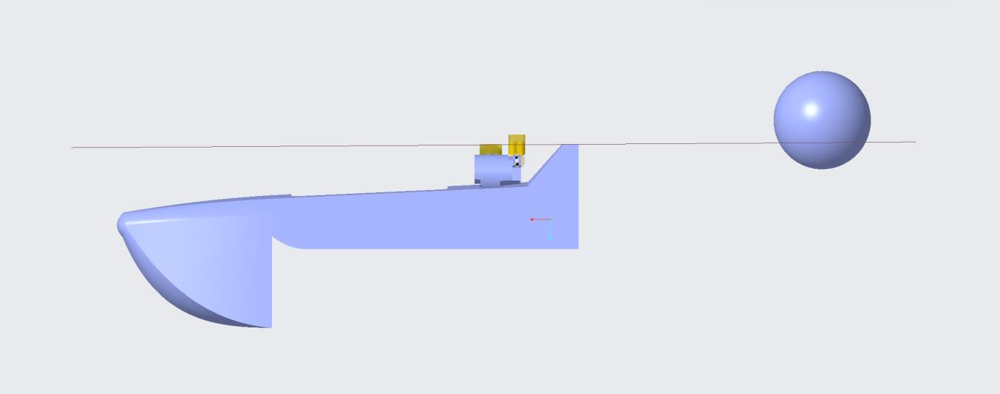
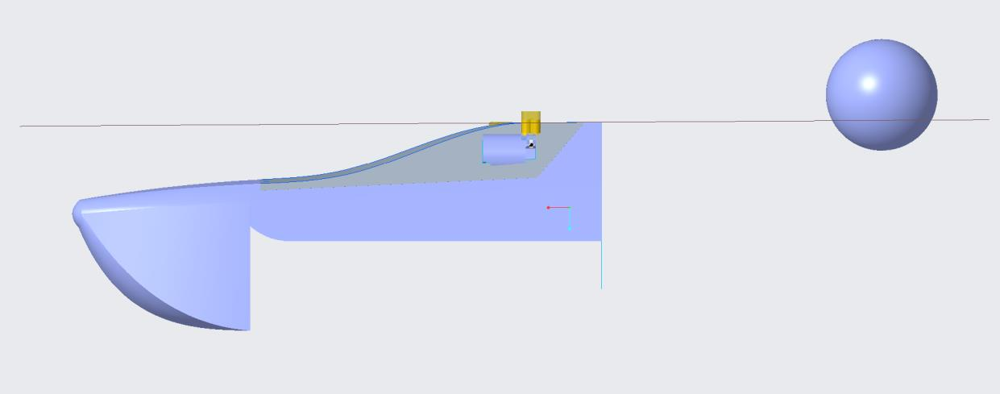
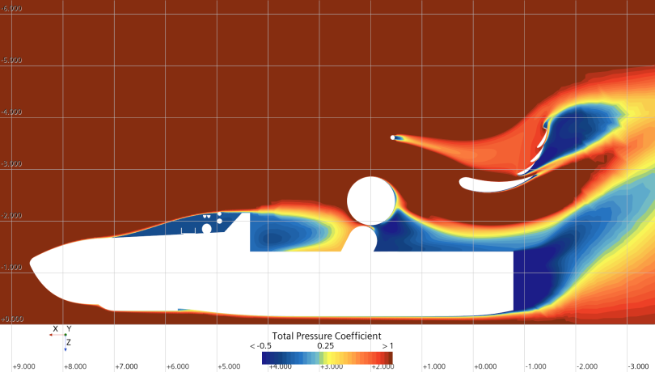
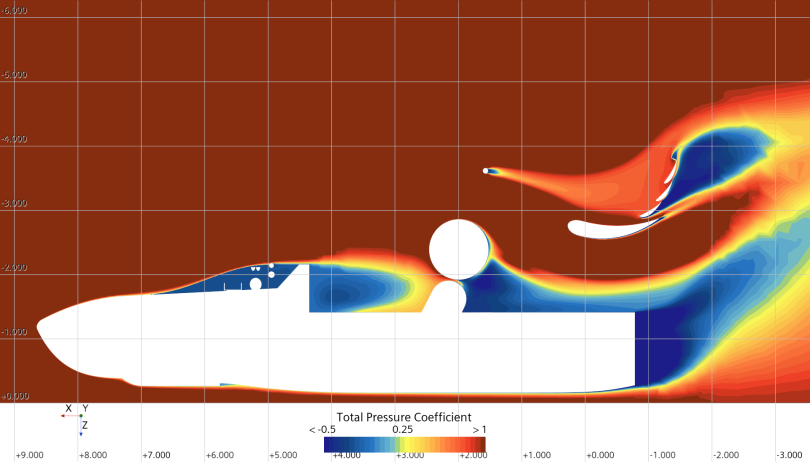
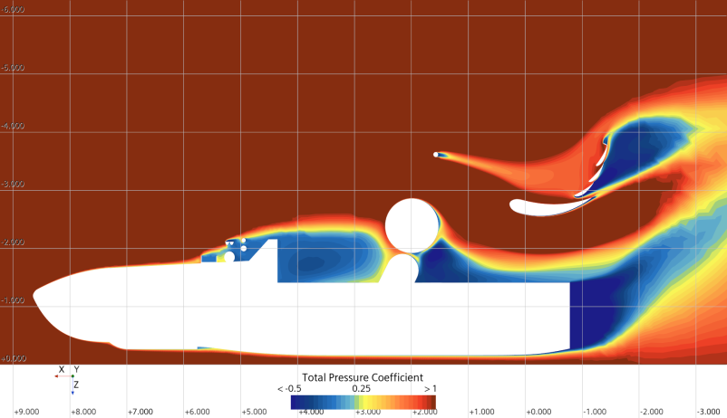
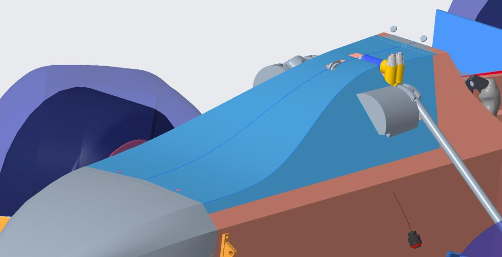
Airfoil inserts (2023–25). Inserts sit inside every aerodynamic element at the inboard and outboard ends. They carry the element’s lift and drag and provide the threaded interface that bolts wings to the endplates, struts and monocoque — which makes them small parts with a large consequence: the previous car had cracked a second inboard insert, most likely from over-constraint, and the team had been bitten before by heat-set threaded inserts sized to the wrong spec. My goal was to reassess and optimize the whole family, stripping out weight and unnecessary structure without giving up margin.
I derived the loads rather than guessing them: I took total front and rear wing downforce and drag from full-car StarCCM+ runs at 95 mph (a 70 mph car speed with a 25 mph headwind) and extrapolated a load per element from each element’s frontal and top surface area. Each element is then treated as a cantilever fixed at the bolted end, with the resultant acting roughly one half to two thirds of the span outboard, giving a moment at the insert of about one eighth of the total force times the span. Bolts were hand-calculated for shear capacity, since they are loaded primarily in shear.
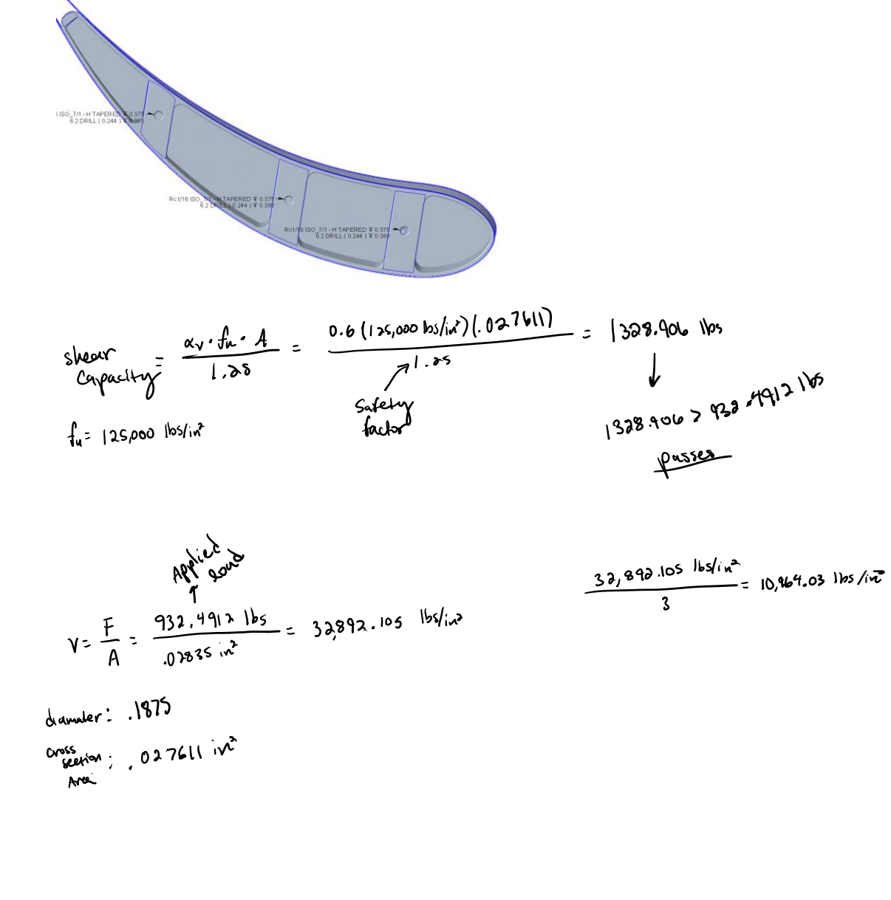
For FEA I brought the geometry into ANSYS Mechanical and worked through the boundary conditions carefully. Remote force to simulate the moment arm gave results I could not justify, so I switched to bearing loads on the cylindrical faces with a fixed support along the outer surface of the insert to represent the epoxy bond — assuming the epoxy and surrounding carbon fiber are effectively infinitely stiff. I then ran stress, deflection and topology optimization studies and redesigned each insert in Creo around the results.
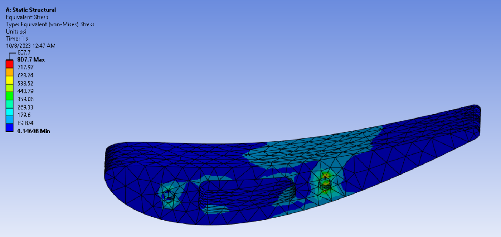
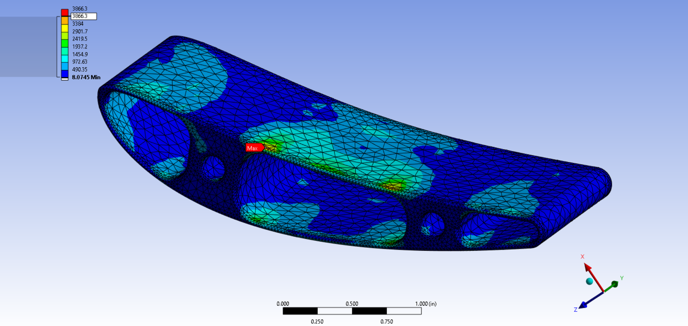
Material and process were decided by trade study. I moved the whole family to SLS-printed Nylon PA-12 after the previous year’s attempt at FDM with ABS composite: SLS gives higher tensile strength, thermal resistance and impact resistance, needs no supports for complex geometry, and is dimensionally consistent, where FDM nylon is noticeably anisotropic with yield strength that depends on print orientation. PA-12 yields at roughly 40.6 MPa in tensile testing with a modulus near 1.6 GPa, and 48 MPa in the ZX orientation — and I noted the discrepancy between that and the nylon properties in the ANSYS material library as a known source of error in the stress concentrations. Print parts were outsourced. I also sized every heat-set threaded hole in CAD directly to the McMaster spec sheet, closing out the failure mode that had cost the team inserts in previous years.
Manufacturing and mentorship. Design work only counts once the part exists. I led 80+ hours of composite laminate layups with dozens of team members to manufacture a 20-element aerodynamic package and the full monocoque — mold prep, ply cutting and orientation, wet layup, vacuum bagging and cure. I also delivered technical seminars on core aerodynamic principles — boundary layer growth, flow separation, and vortex dynamics — to train and mentor new members so they could take on their own studies.
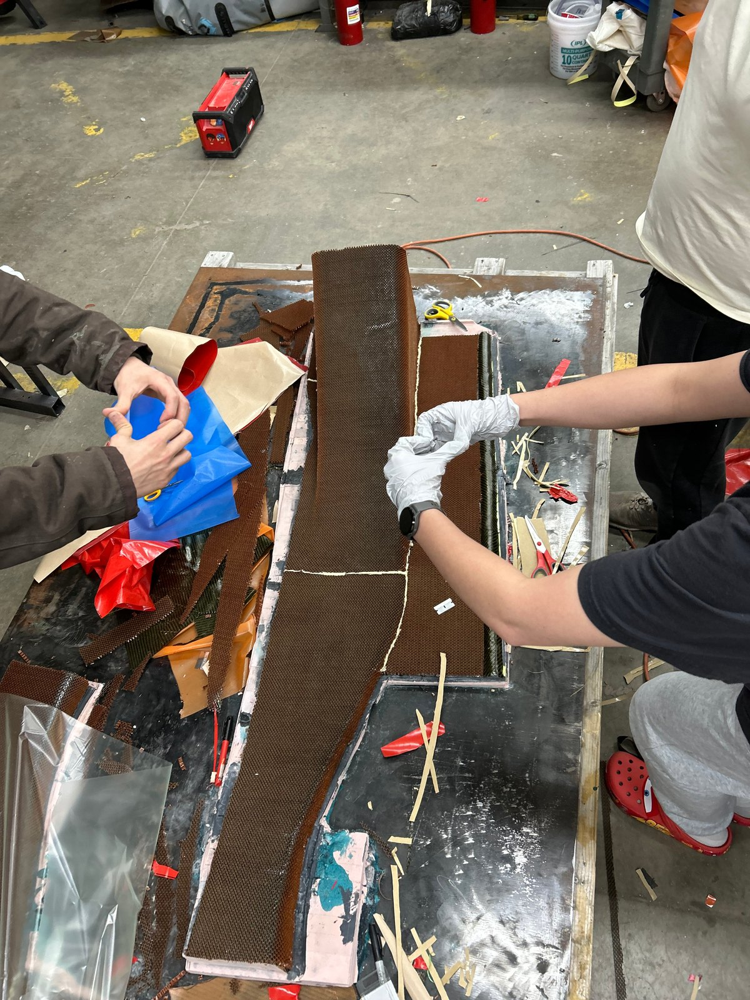
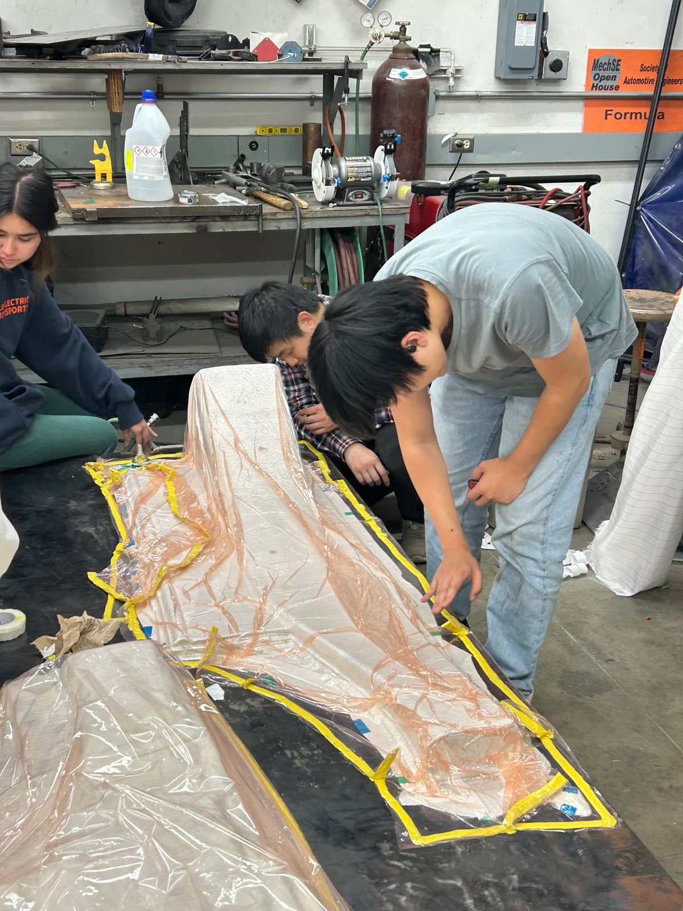
Tools & methods
CAD in PTC Creo, with parameterized models driven by dynamic bounding-box references and monocoque geometry constraints so parts stay rules-legal and correctly mated as the chassis evolves. CFD in Simcenter StarCCM+, where I optimized the team’s workflow by enhancing its Java macro scripts and moving to k-omega SST turbulence modeling, which made test data repeatable across runs and the aerodynamic analysis more precise. Structural work in ANSYS Mechanical — static structural stress, deflection and topology optimization, with loads extrapolated from CFD results — backed by hand calculations in spreadsheets for bolt shear, bracket bending and peeling, cable sizing, and composite pull-through. Manufacturing in woven T700s and Toray carbon fiber over in-house and outsourced molds, plus SLS-printed Nylon PA-12, waterjet and milled 6061 aluminum, and 304 stainless cable.
Outcome
Redesigning the nosecone and front damper system improved undertray aerodynamic efficiency (CL − CD) from −5.62 to −10.17, reduced the chassis drag coefficient by 0.15, enhanced rear wing lift by 0.8, and lowered the monocoque drag coefficient by 1.1. The structural work on the airfoil inserts — CFD-extrapolated loads through ANSYS FEA for stress, deflection and topology optimization — led to a redesigned model in Creo that cut 2 lbs of component weight.
On the undertray, the integrated five-piece design came out both faster and lighter than the part it replaced, dropping undertray mass from 12.36 lbs to 9.70 lbs while raising the whole car’s points score, with every mounting element carrying positive margin against the team’s 1.7 factor-of-safety target. Alongside the analysis, I led 80+ hours of composite laminate layups with dozens of members to manufacture a 20-element aerodynamic package and a full monocoque, and delivered technical seminars on boundary layer growth, flow separation and vortex dynamics to train and mentor new team members.